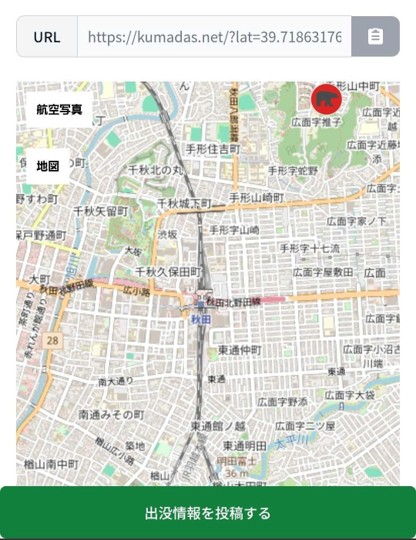
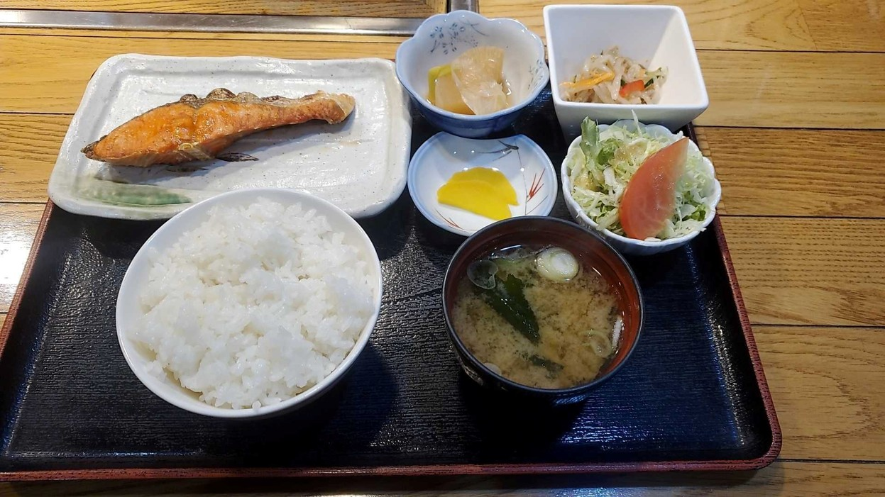

朝活編
みなさん、こんにちは！金曜1コマ3班GAのやなぎんです。
GWも終わりましたが、みなさんは“5月病”になっていませんか？
休み明けは、どうしても生活リズムが崩れがちです。夜更かしをしてしまったり、朝起きるのがつらくなったり、「大学に行くまでが大変…」と感じている人もいるかもしれません。
特に大学生の朝は難しいです。
ギリギリまで寝たい…
でも1限には行かなきゃいけない…
朝ごはんも食べたいけど時間がない…
そんな感じで、毎朝バタバタしている人も多いと思います。実際、僕もそのひとりでした。
そんな中で最近、少しだけ朝が楽になる習慣を見つけました。それが、「朝散歩」です。
今回は、そんな“朝に悩む大学生”の自分が、秋田駅まで歩いて朝ごはんを食べに行った話を書こうと思います。
① 朝5:45、まず熊を確認する
朝は5:45に起床。
……と言うと、かなり意識が高そうに聞こえますが、実際は普通に眠いです。
まず最初にやることは、スマホで熊の出没情報を確認すること。
秋田っぽい朝です笑
「今日は熊が出ていないか」を確認してから外へ出ます。何をするにしても、まずは身の安全を確保するべし！

6:25 外へ。
この時間は、まだ街も完全には動き出していません。人通りも少なくて、「朝」というより“1日の準備時間”みたいな空気があります。
眠気はまだ残っていますが、歩いているうちに少しずつ目が覚めてきます。
大学生になってから、朝はずっと“急ぐ時間”でした。ギリギリに起きて、急いで準備して、急いで大学へ向かう。
でも、こうして早く外へ出るだけで、朝の印象が意外と変わることに気づきました。
② 秋田駅まで歩く理由
6:45 秋田駅に到着。
この日の目的地は、「まんま」という朝食のお店です。秋田市民市場の近くにある店で、朝ごはんを食べるためだけに歩いています。
大学生にとって、朝ごはんは意外と難しい存在です。
ギリギリまで寝たい。
でも何か食べないと午前中が終わる。
結果、コンビニのパンで済ませる。
たぶん、多くの大学生がこんな感じだと思います。だからこそ、ちゃんとした朝ごはんを食べると、少し感動します。
この日注文したのは、朝食定食の塩鮭セット。950円。
湯気の立つ白ごはん。
しっかり焼かれた鮭。
味噌汁と小鉢。
いわゆる「ちゃんとした朝ごはん」です。特別豪華なわけではないのですが、朝の身体にはかなり沁みます。
焼き鮭をほぐしながら、「日本の朝ごはんっていいな」と思いました。
普段、自分ではここまで丁寧な朝食を作る余裕はなかなかありません。だからこそ、誰かが整えてくれたごはんを静かに食べる時間が、すごくありがたく感じます。

③ 朝ごはんが、ちょっと生活を整えてくれる
朝散歩を始めてから、「朝が好きになった！」みたいな劇的な変化は、正直ありません。
普通に眠い日はあります。
ただ、朝に少し余裕があるだけで、その日の気分が少し変わることには気づきました。
静かな道を歩いて、温かいごはんを食べる。それだけなのですが、不思議と生活が整った感じがします。
派手ではないけれど、ちゃんと満たされる。最近は、その感覚が少し好きです。
大学生の朝は、どうしてもバタバタしがちです。でも、たまには少し早く起きて、ゆっくり歩いてみるのも悪くないと思います。
もしかしたら、自分なりの「朝の楽しみ」が見つかるかもしれません。
以上、やなぎんの生活改善ログ でした。